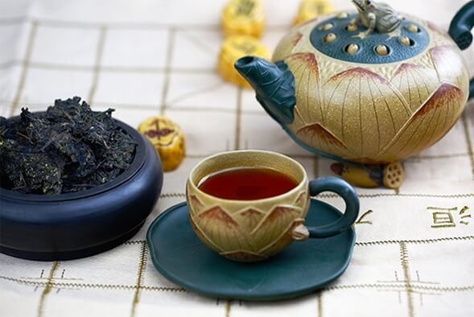

茯茶有着六百年的历史，它是丝绸之路上一颗闪亮的明珠。茯茶为后发酵茶，含有丰富的营养成分和有益菌，被民间称为“生命之饮，神秘之茶”。经清华大学医学研究院中药现代化研究中心试验证明，茯茶具有抗突变，抗癌，降三高，保肝，提高免疫力等作用。茯茶是茶类中保健养生的最佳饮品，而秦御蛹虫草茯茶更是茯茶世界中的无冕之王。
秦御蛹虫草茯茶，选用上等秦岭腹地无污染、纯天然富硒茶，经蒸煮压砖发酵，茯茶内产生的一种独特的金黄色颗粒，俗称“金花”，即“冠突散囊菌”，是一种对人体有益的益生菌体。茯茶中的“金花”含量与茶叶品质呈正相关，并有“茶好金花开，花多茶质好”之说。到目前为止，在国家茶业标准中唯一只有茯茶中有“冠突散囊菌”（金花）这项指标。湖南农业大学刘仲华教授等已在分子水平上充分证明茯茶中存在具有显著降脂减肥和降糖功能的特异成分。
秦御蛹虫草茯茶在传统茯茶工艺上和现代科技结合，采用生物发酵技术，将茯茶与蛹虫草有机融合，从根本上提高了茯茶的养生价值、营养价值、品饮价值、收藏价值和增值保值，是茯茶工艺上、技术上的大迈进，扭转了茯茶一直被人们当做边销茶，少数民族饮用茶的观念，为现代家庭生活提供了健康佳品。喝虫草补养兼备，喝茯茶有益健康，“菌菌相融”——秦御蛹虫草茯茶，开创了茶饮健康新纪元。